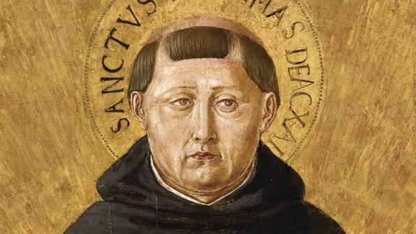
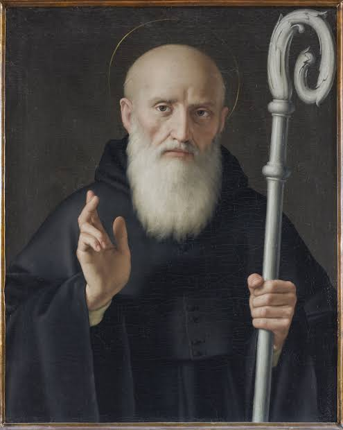
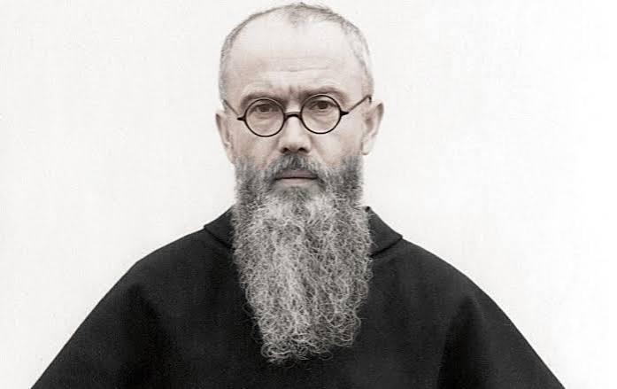
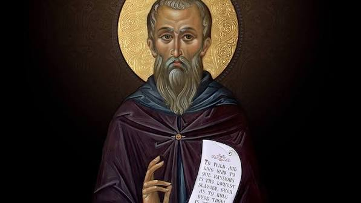

São João Paulo II
O papa que venceu o comunismo. Sobrevivente da Segunda Guerra Mundial, conseguiu um feito considerado impossível de vencer o regime socialista incentivando o movimento Solidarność.
Saiba mais
Santo Agostinho de Hipona
Um grande patriarca da Igreja Católica. Conhecido por defender a doutina católica das heresias como o maniqueísmo e pelagianismo.
Saiba mais
Santo Tomás de Aquino
Autor da Suma Teológica, conseguiu explicar a fé sobrenatural baseada na razão. Utilizando a filosofia ateniense como base e a doutrina católica da patrística.
Saiba mais
São João Maria Vianney
O famoso Cura d'Ars. Conhecido como padroeiro dos padres e por sua entrega total ao ministério sacerdotal.
Saiba mais
São Bento
O criador da medalha de São Bento e dos beneditinos. Com essa medalha combateu frente a frente Satanás e sua regra beneditina moldou a civilização ocidental depois da queda do Império Romano.
Saiba mais
Santa Teresinha do Menino Jesus
A padroeira das missões. Carmelita do mosteiro de Lisieux dedicou sua vida ao Menino Jesus e acreditava que o caminho era ser como criança diante de Deus.
Saiba maisSão Carlo Acutis
O "Santo da Internet". Criou sites para propagar os milagres eucarísticos e influencia jovens a usarem a internet como meio de evangelização.
Saiba mais
São Maximiliano Kolbe
O santo que morreu no lugar de 10 fugitivos do campo de concentração. Ademais, conhecido por sua confiança total à Virgem Maria.
Saiba mais
São Pedro
O primeiro papa da Igreja Católica. O príncipe dos apóstolos, aquele que proclamou a divindade de Nosso Senhor Jesus Cristo na cidade de Roma e quem iniciou a sucessão apostólica.
Saiba mais
São Justino
Um dos primeiros apologetas católicos. Estava procurando a razão da vida em todos os lugares do mundo, todavia somente encontrou paz e saciedade na Igreja Católica.
Saiba mais